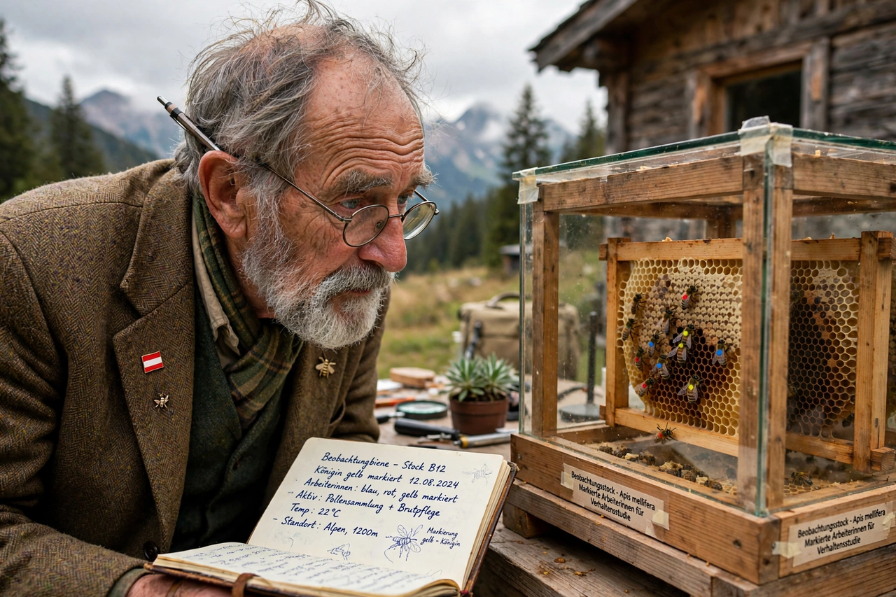

Karl von Frisch
| Karl von Frisch | |
|---|---|
 | |
| Born | 20 November 1886, Vienna, Austria-Hungary |
| Died | 12 June 1982 (aged 95), Munich, West Germany |
| Fields | Zoology, ethology |
| Known for | Decoding the waggle dance of honey bees; bee sensory physiology |
| Awards | Nobel Prize in Physiology or Medicine (1973, shared) |
Karl Ritter von Frisch (20 November 1886 – 12 June 1982) was an Austrian ethologist who received the Nobel Prize in Physiology or Medicine in 1973, together with Niko Tinbergen and Konrad Lorenz. He is best known for his work on the sensory perceptions of the honey bee and for decoding the meaning of the bee's waggle dance, by which foragers communicate the direction and distance of food sources to nestmates.
Life
Von Frisch was born in Vienna, the youngest of four sons of the surgeon Anton von Frisch. He studied zoology in Vienna and Munich, obtaining his doctorate in 1910. He held posts at Rostock, Breslau (Wrocław) and Graz before succeeding to the chair of zoology at Munich in 1925. Because of his partly Jewish ancestry he was threatened with removal under Nazi racial laws but was retained, partly because his research on the threatened bee disease nosema was judged economically important; he retired from Munich in 1950 and continued research at Graz and at his estate in Brunnwinkl.
Work on bees
Von Frisch demonstrated that honey bees have colour vision — the first proof of colour vision in an insect — training bees to associate coloured cards with sugar water. He showed that bees can perceive ultraviolet light and polarised light, which they use as a compass, and that they possess an internal clock contributing to their remarkable time sense.
His most famous discovery concerned bee communication. In the 1940s he showed that a returning forager performs a figure-of-eight "waggle dance" on the vertical comb in the darkness of the hive. The angle of the waggle run relative to gravity encodes the direction of the food source relative to the sun, and the duration of the waggle encodes distance. The dance, together with odour cues, recruits other bees to the advertised site. Von Frisch summarised the work in The Dancing Bees (1955) and The Dance Language and Orientation of Bees (1967).
He also studied fish hearing and the alarm substance (Schreckstoff) given off by injured minnows, and showed that bees communicate the quality of food sources through the vigour of the dance.
Nobel Prize and legacy
The 1973 Nobel Prize recognised von Frisch, Lorenz and Tinbergen as founders of ethology. Von Frisch's dance-language hypothesis was disputed in the 1960s by Adrian Wenner and others, who argued that recruits relied mainly on odour; later experiments, including harmonic-radar tracking of recruited bees, vindicated the dance as a genuine channel of spatial information, while confirming that odour also matters.
Selected works
- The Dancing Bees: An Account of the Life and Senses of the Honey Bee (1955)
- The Dance Language and Orientation of Bees (1967)
- Bees: Their Vision, Chemical Senses, and Language (1950)
- A Biologist Remembers (autobiography, 1957)